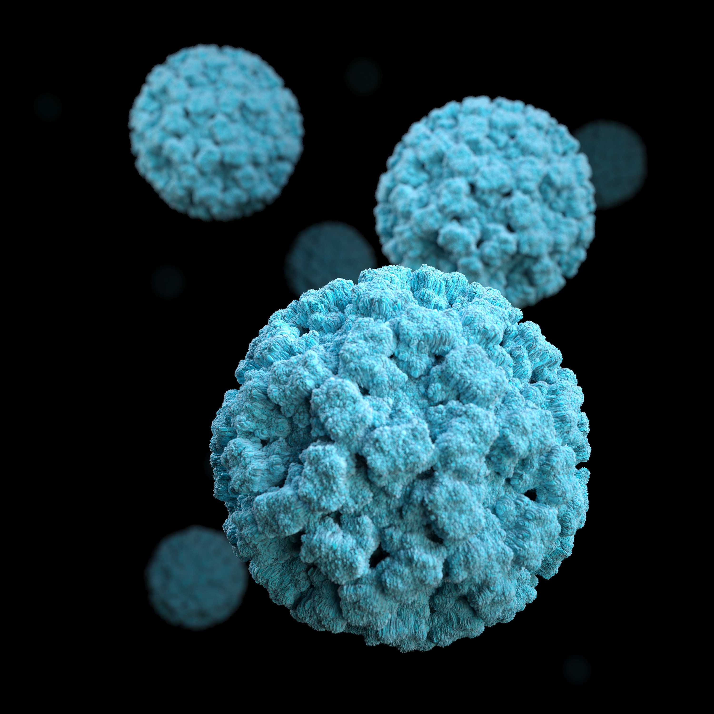
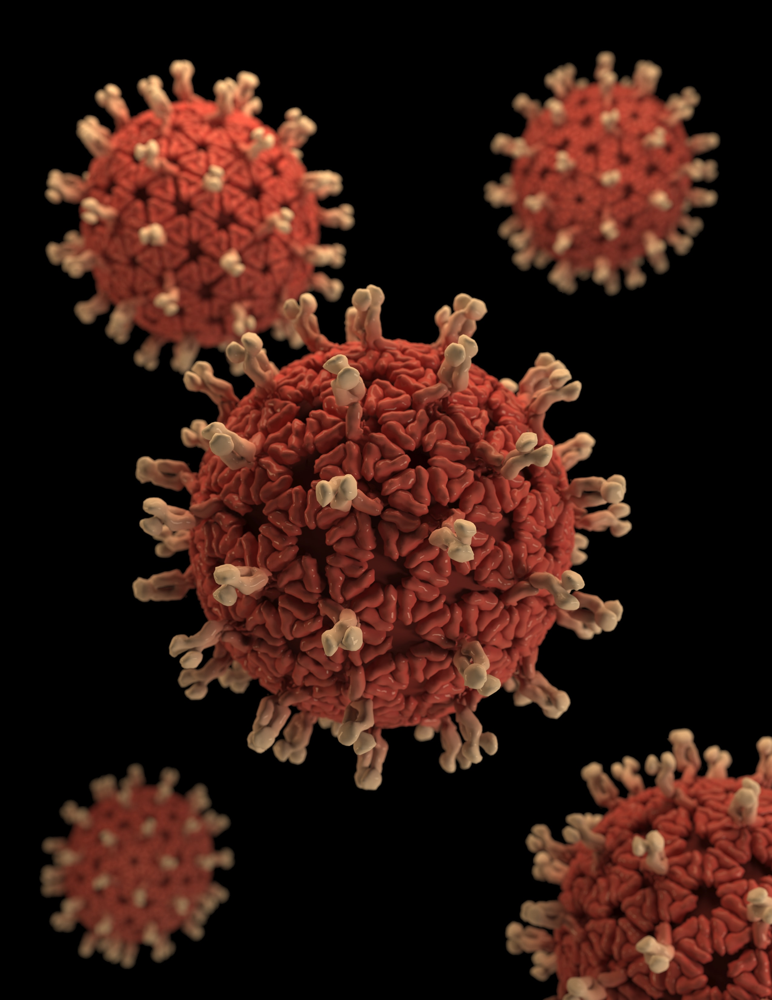

Health-AI is a project which uses advanced techniques like AI to detect sudden health issues

The symptoms you are concerned about might be caused by a condition that is reversible.
Detecting a disease before clinical detection can be extremely beneficial for the person as they can visit the doctor with prior knowledge.
Our project aims on multiple diseases and detect them using Artificial Intelligence techniques.
The following diseases require you to enter NUMERIC details
Numeric Data Required
Enter the details in the form that appears
Numeric Data Required
Enter the details in the form that appears
Numeric Data Required
Enter the details in the form that appears
Numeric Data Required
Enter the details in the form that appears
Numeric Data Required
Enter the details in the form that appears
Numeric Data Required
Enter the details in the form that appears
Numeric Data Required
Enter the details in the form that appears
The following diseases require you to enter IMAGES
Image Required
Enter the image in the dropbox that appears
Image Required
Enter the image in the dropbox that appears
Image Required
Enter the image in the dropbox that appears
Image Required
Enter the image in the dropbox that appears
The following section gives details about the Diseases

Corona Virus
Most Recent
CORONA VIRUS
The novel coronavirus outbreak that began in December in Wuhan, China, has now spread to more than 25 countries and regions.
Cases rise: There are a total of 28,273 confirmed cases and 565 deaths globally, the vast majority of which are in mainland China. Some countries have seen a surge in cases; Japan now has 45 cases, the highest number for a country outside China.
Youngest patient: Two newborn infants are infected in Wuhan, according to China's state broadcaster. The youngest baby was diagnosed just 30 hours after being born to a mother who had also been infected. Experts warn it's unclear how the baby got infected, as there could be various ways it became exposed to the virus.
Recoveries: There are reports of patients recovering; the first patient in the US was discharged from hospital earlier this week, in Washington state, and the first patient in Taiwan will also be discharged soon.
Quarantined cruises: More than 7,300 people are quarantined on two cruise ships docked in Hong Kong and Japan, after former passengers were confirmed to have the virus. A total of 20 people were found to be infected on the ship in Japan, tests showed today.
DIABETES
Diabetes is a chronic disease that occurs either when the pancreas does not produce enough insulin or when the body cannot effectively use the insulin it produces.
Insulin is a hormone that regulates blood sugar.
Hyperglycaemia, or raised blood sugar, is a common effect of uncontrolled diabetes and over time leads to serious damage to many of the body's systems, especially the nerves and blood vessels.
According to the World Health Organization (WHO), India had 69.2 million people living with diabetes in 2015.
India actually has the highest number of diabetics of any one country in the entire world.
In 2016, diabetes was the direct cause of 1.6 million deaths and in 2012 high blood glucose was the cause of another 2.2 million deaths worldwide.

Diabetes
Most Common

Liver Disease
Very Common
LIVER DISEASE
Liver disease can be inherited (genetic) or caused by a variety of factors that damage the liver, such as viruses and alcohol use. Obesity is also associated with liver damage.
Over time, damage to the liver results in scarring (cirrhosis), which can lead to liver failure, a life-threatening condition.
According to the latest WHO data published in 2017 Liver Disease Deaths in India reached 259,749 or 2.95% of total deaths.
The age adjusted Death Rate is 22.93 per 100,000 of population ranks India #63 in the world.
CHRONIC KIDNEY DISEASE
Chronic kidney disease, also called chronic kidney failure, describes the gradual loss of kidney function.
Your kidneys filter wastes and excess fluids from your blood, which are then excreted in your urine.
When chronic kidney disease reaches an advanced stage, dangerous levels of fluid, electrolytes and wastes can build up in your body.
Studies estimate that the number of new patients diagnosed with End Stage Kidney Disease (ESKD) who are started on dialysis or transplantation is over 100,000 per year in India

Kidney Disease
Pernicious
Pneumonia
Pernicious
PNEUMONIA
Pneumonia is an infection of the lungs with a range of possible causes. It can be a serious and life-threatening disease.
It normally starts with a bacterial, viral, or fungal infection.
Pneumonia can occur in young and healthy people, but it is most dangerous for older adults, infants, people with other diseases, and those with impaired immune systems.
Fifty percent of the world’s pneumonia deaths occur in India which means approximately 3.7 lakh children die of pneumonia annually in India.
India’s under-five death toll is higher than the deaths in Nigeria, Congo and Pakistan put together.
SKIN LESIONS
A skin lesion is a part of the skin that has an abnormal growth or appearance compared to the skin around it.
Two categories of skin lesions exist: primary and secondary. Primary skin lesions are abnormal skin conditions present at birth or acquired over a person’s lifetime.
Secondary skin lesions are the result of irritated or manipulated primary skin lesions.
The diagnosis and treatment of nonmelanoma skin cancers increased by 77 percent between 1994 and 2014, worldwide.

Skin Lesions
Harmful
Heart Disease
Most Pernicious
HEART DISEASE
Heart disease describes a range of conditions that affect your heart.
Diseases under the heart disease umbrella include blood vessel diseases, such as coronary artery disease;
heart rhythm problems (arrhythmias); and heart defects you're born with (congenital heart defects), among others.
Heart diseases are the number 1 cause of death globally, taking an estimated 17.9 million lives each year.
One third of these deaths occur prematurely in people under 70 years of age.
BREAST CANCER
Breast cancer is cancer that develops from breast tissue. Signs of breast cancer may include a lump in the breast, a change in breast shape,
dimpling of the skin, or a red or scaly patch of skin.
Breast cancer is the most frequent cancer among women, impacting 2.1 million women each year, and also causes the greatest number of cancer-related deaths among women.
In 2018, it is estimated that 627,000 women died from breast cancer – that is approximately 15% of all cancer deaths among women.
While breast cancer rates are higher among women in more developed regions, rates are increasing in nearly every region globally.
Breast Cancer
Very Common
Skin Cancer
Harmful
SKIN CANCER
Skin cancer is an abnormal growth of skin cells. It generally develops in areas that are exposed to the sun, but it can also form in
places that don’t normally get sun exposure.
There are two main types of skin cancer: melanoma and non-melanoma. The most common non-melanoma tumours are basal cell carcinoma and squamous cell carcinoma.
Melanoma of the skin is the 19th most commonly occurring cancer in men and women. There were nearly 300,000 new cases in 2018.
Benign skin cancer is the 5th most commonly occurring cancer in men and women, with over 1 million diagnoses worldwide in 2018, although this is likely to be an underestimate.
SEPSIS
Sepsis arises when the body’s response to an infection injures its own tissues and organs, potentially leading to death or significant morbidity.
The global epidemiological burden of sepsis is difficult to ascertain. It is estimated to affect more than 30 million people worldwide every year, potentially
leading to 6 million deaths. The burden of sepsis is most likely highest in low- and middle-income countries.
It is estimated that 3 million newborns and 1.2 million children suffer from sepsis globally every year.
Three out of every ten deaths due to neonatal sepsis are thought to be caused by resistant pathogens.
One in ten deaths associated with pregnancy and childbirth is due to maternal sepsis with over 95% of deaths
due to maternal sepsis occurring in low- and middle-income countries. One million newborn deaths are associated with maternal infection, such as maternal sepsis, each year.

Sepsis
Pernicious
Optic Nerve Disease
Harmful
OPTIC NERVE DISEASE
The optic nerve is a bundle of more than 1 million nerve fibers that carry visual messages.
You have one connecting the back of each eye (your retina) to your brain. Damage to an optic nerve can cause vision loss. The type of vision loss and how severe it is depends on where the damage occurs. It may affect one or both eyes.
There are many different types of optic nerve disorders, including:
Glaucoma is a group of diseases that are the leading cause of blindness in the United States.
Glaucoma usually happens when the fluid pressure inside the eyes slowly rises and damages the optic nerve.
Optic neuritis is an inflammation of the optic nerve. Causes include infections and immune-related illnesses such as multiple sclerosis. Sometimes the cause is unknown.
Optic nerve atrophy is damage to the optic nerve. Causes include poor blood flow to the eye, disease, trauma, or exposure to toxic substances.
Optic nerve head drusen are pockets of protein and calcium salts that build up in the optic nerve over time